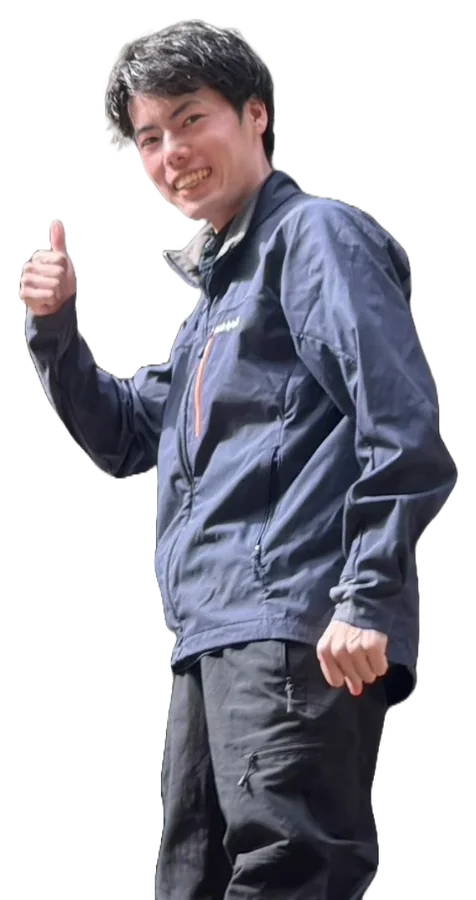
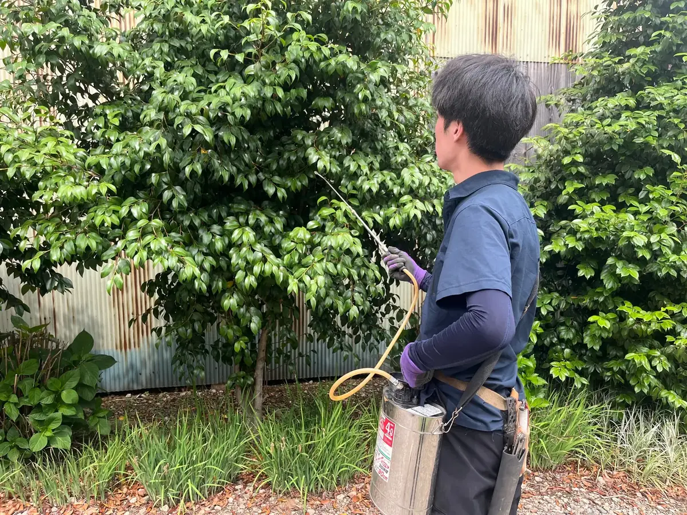
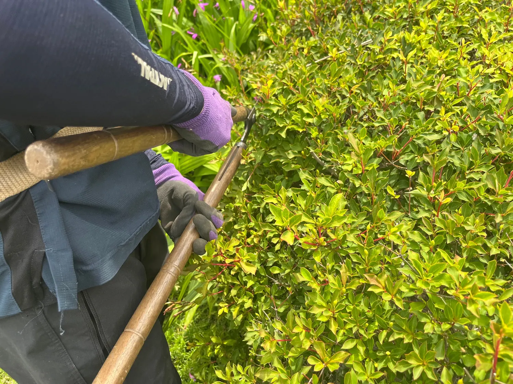

川越市の造園・植木屋
庭のこと、
もっと気軽に。
庭木1本のお手入れから、伐採・草刈り・防草施工まで。
まず料金の目安を確認してから相談できる、川越市の植木屋です。
庭木1本から見積もり相談OK8:00〜18:00

料金を先に確認
サイト上の料金シミュレーターで最低料金の目安を確認できます。
庭木1本から対応
小さな作業でもご相談いただけます。
川越市を中心に対応
埼玉県・東京都の対応地域は専用ページで確認できます。
川越市で庭のお手入れをお探しの方へ
剪定・伐採・草刈りを、
分かりやすい料金で。
植木屋 アンダービーチは川越市下赤坂を拠点に、庭木剪定、刈込、伐採・伐根、草刈り・除草、防草シート・砂利敷きなどに対応しています。
川越市での対応内容を見る →はじめての方へ
「頼んだら高そう」を減らすため、料金の目安を公開しています。- 見積もり前に概算を確認
- 必要な作業だけ相談
- 正式料金は作業条件を確認して案内
01
作業内容
主な作業
まずは代表的な4つを掲載しています。刈込・生垣・庭木の消毒・整地なども対応しています。
01
庭木剪定・刈込
伸びた枝を整理し、見た目と風通しを整えます。
1,000円〜 / 1本詳しく見る → 02伐採・伐根
管理が難しくなった木の伐採、根の撤去に対応します。
伐採 3,000円〜詳しく見る → 03草刈り・除草
機械除草と人力除草から庭の状況に合わせて選べます。
300円〜 / 1㎡詳しく見る → 04防草シート・砂利
雑草管理の負担を減らし、庭を整えます。
2,000円〜 / 1㎡詳しく見る →





そのほか： 庭木の刈込 / 生垣の刈込 / 庭木の消毒 / 整地 / 砂利敷き / 枝葉の処分
02
施工事例
実際の施工を、
写真で紹介。
施工前後の変化が分かる写真を中心に、実際の施工内容を少しずつ紹介していきます。


庭木剪定の施工例
実際の施工写真を掲載しています。施工前後の変化が分かる写真を掲載しています。地域・樹種・料金など、確認できた情報は順次追記していきます。
この施工事例を詳しく見る →03
料金の目安
まずは、
いくらか見るだけ。
作業内容と大きさ・面積を入れるだけで、その場で最低料金の目安が分かります。まだ依頼を決めていなくても、もちろん大丈夫です。
概算料金
1,000円〜 庭木剪定 1〜2m × 1本 ※ あくまで最低料金の概算です。樹形・枝量・傾斜・高所・搬出経路・近隣設備などにより料金が変動します。04
ご依頼の流れ
相談から施工まで
- 01
料金の目安を確認
サイト上で作業内容と大きさ・面積を選び、概算を確認します。
- 02
フォームでお問い合わせ
作業内容やご希望をフォームからお知らせください。必要に応じて現地確認の日程をご案内します。
- 03
正式なお見積り
現地の状態や作業条件を確認して、正式な金額をご案内します。
- 04
施工・完了
内容と金額をご確認いただいてから作業し、仕上がりをご確認いただきます。
05
- 屋号
- 植木屋 アンダービーチ
- 営業時間
- 8:00〜18:00
- 定休日
- 日曜日
- 所在地
- 〒350-1155 埼玉県川越市下赤坂1805-130
- 主な対応
- 剪定・刈込・伐採・伐根・除草・消毒・防草施工
対応エリア
川越市を中心に、
埼玉・東京へ。
川越市、所沢市、狭山市、ふじみ野市、富士見市、入間市、日高市など。東京都西部・多摩地域にも対応しています。
お問い合わせ
庭のこと、
フォームから気軽に。
剪定・伐採・草刈りなど、まだ依頼を決めていない段階でも大丈夫です。分かる範囲でご入力ください。
underbeech0601@gmail.com メールへ直接ご連絡いただくこともできます。